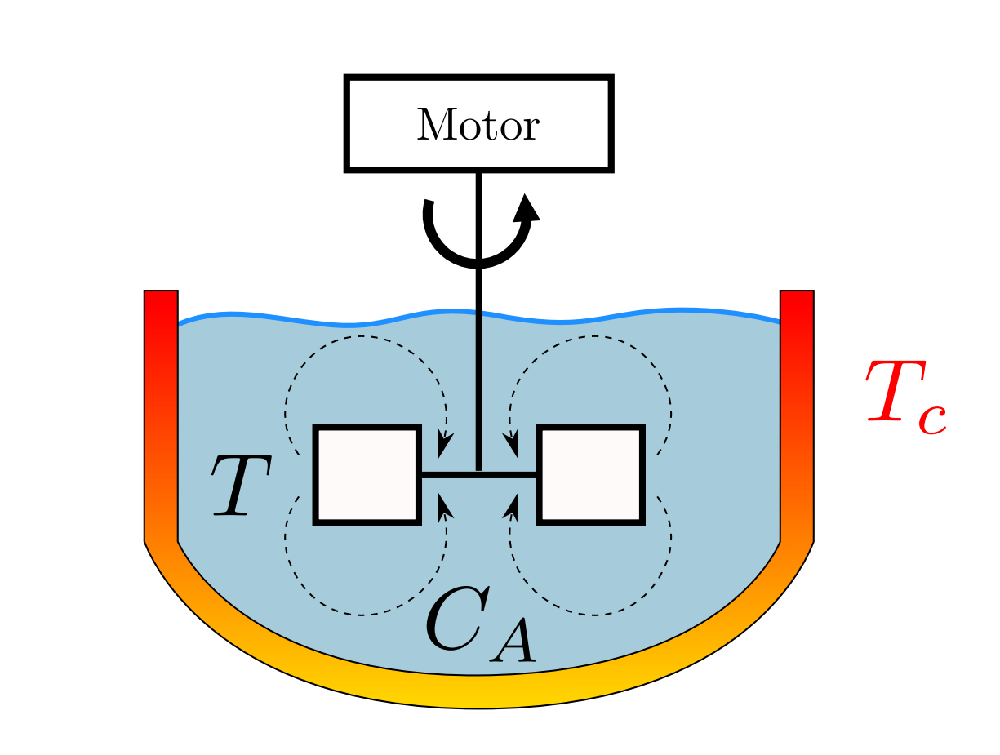

METHOD · RECORDED ANIMATION
Model Predictive Control
Reachset MPC AROC provides a reachset-based model predictive control (MPC) implementation for nonlinear systems affected by disturbances and measurement errors. The algorithm stabilizes the system over an infinite horizon by driving it into a predefined terminal region using a cost-optimal tracking controller. Reachability analysis ensures satisfaction of input and state constraints during the control computation. The implementation supports tightened input constraints, contraction constraints for finite-time convergence, and integrates with CORA for set-based computations.

Stirred Tank Reactor
The next benchmark is taken from the AROC manual, §6.4 and considers an exothermic, irreversible reaction
A → B of the reactant A to the product B inside a stirred tank reactor (see Fig. 11).

The system dynamics for the stirred tank reactor is as follows AROC Manual §6.4:
\( \dot{x}_1 = \frac{q}{V}(C_{Af} - (x_1 + C_A^{eq})) - k_0 \cdot e^{-E/(R(x_2 + T^{eq}))} \cdot (x_1 + C_A^{eq}) + w_1 \)
\( \dot{x}_2 = \frac{q}{V}(T_f - (x_2 + T^{eq})) - \frac{\Delta H}{\rho \cdot C_p} k_0 \cdot e^{-E/(R(x_2 + T^{eq}))} \cdot (x_1 + C_A^{eq}) + \frac{UA}{V \cdot \rho \cdot C_p} (u + T_c^{eq} - (x_2 + T^{eq})) + w_2 \)
where the system states are the difference of the concentration of reactant A from the equilibrium point \( x_1 = C_A - C_A^{eq} \) and the difference of the reactor temperature from the equilibrium point \( x_2 = T - T^{eq} \), and the system input is the difference of the cooling stream temperature from the equilibrium point \( u = T_c - T_c^{eq} \).
The parameters are defined as:
- \( C_A^{eq} = 0.5 \ mol/L \)
- \( T^{eq} = 350 \ K \)
- \( T_c^{eq} = 300 \ K \)
- \( q = 5/3 \ l/s \)
- \( T_f = 350 \ K \)
- \( V = 100 \ l \)
- \( \rho = 1000 \ g/l \)
- \( C_p = 0.239 \ J/g/K \)
- \( \Delta H = -5 \times 10^4 \ J/mol \)
- \( E/R = 8750 \ K \)
- \( k_0 = \frac{7.2}{60} \times 10^{10} \ s^{-1} \)
- \( UA = \frac{1}{12} \times 10^4 \ J/s/K \)
The input constraint is \(u \in [-20, 70] K\) and the set of disturbances is \(w_1 \in [-0.1, 0.1] mol/l/s\) and \(w_2 \in [-2, 2] K/s\).
Furthermore, we consider the initial set \(x_1(0) \in [-0.17, -0.13] mol/l\) and \(x_2(0) \in [-48, -43] K\).
The differential equation describing the stirred tank reactor is implemented in the file /benchmarks/dynamics/stirredTankReactor.m, and the parameters for the system are specified in the file /benchmarks/parameter/param_stirredTankReactor.m. The name of the benchmark is 'stirredTankReactor'.